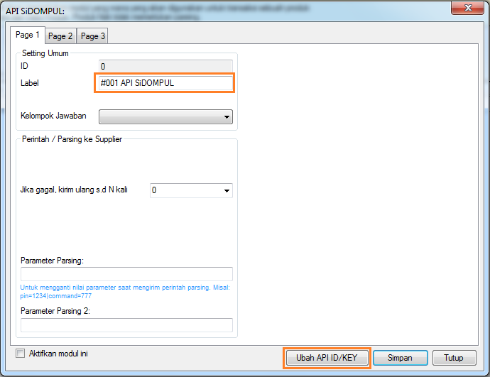

API SiDOMPUL
Mulai versi 4.1.2 kita dapat mentransaksikan produk - produk XL Axiata seperti isi pulsa dan paket data di OtomaX melalui API SiDOMPUL yang disediakan oleh XL Axiata.
Berikut langkahnya:
- Pastikan telah memiliki software OtomaX, untuk melakukan pembelian OtomaX silahkan klik disini.
-
Pastikan Anda telah mendaftar API SiDOMPUL ke dealer XL Axiata di kota Anda dan memiliki data di bawah
ini untuk
mengaksesnya:
- PIN
- CLIENT_ID
- CLIENT_KEY
- API_ID dan API_KEY untuk API: GetDompulBalance
- API_ID dan API_KEY untuk API: GetProductList
- API_ID dan API_KEY untuk API: GetTransactionHistory
- API_ID dan API_KEY untuk API: PostEncrypt
- API_ID dan API_KEY untuk API: PostPackage
- API_ID dan API_KEY untuk API: PostW2P
- Pastikan telah menggunakan versi 4.1.2, kalau belum silahkan update dahulu klik disini.
-
Di OtomaX, pilih modul API SiDOMPUL -> klik kanan -> klik Tambah API SiDOMPUL.

- Klik tombol Ubah API ID/KEY isi dengan data - data API SiDOMPUL Anda, kemudian klik tombol OK dan tombol Simpan.
-
Pada menu Administrasi -> Parsing ke Provider -> kolom Perintah isi dengan:
denom=NOMINALataupaket=NAMA_PAKET. - Buat penangkap jawaban, klik disini.
- Selesai.